01La chambre jaune
01La chambre jaune
Chambre Pouilly-Fuissé
2 personnes · 110 € la nuit, petit déjeuner compris
Les murs couleur soleil, un grand lit de 160 et sa salle d’eau privative, face aux vignes.
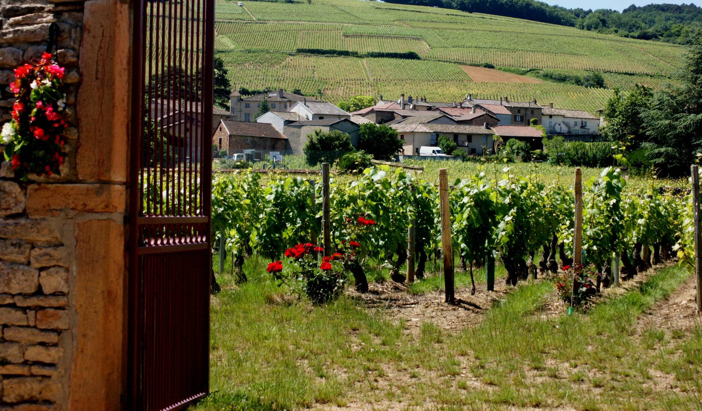
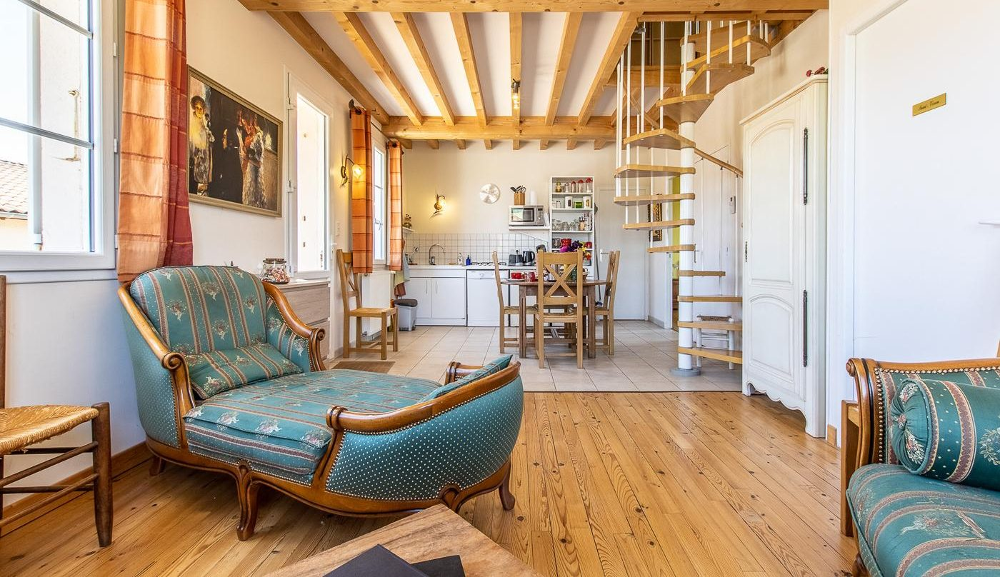
Deux chambres face aux vignes chez Sophie, à deux pas du village de Fuissé.
La maison de pays de 1953 a été entièrement rénovée. Le premier étage, 100 m², est réservé aux hôtes : deux chambres à l’accès indépendant et une pièce de vie avec cuisine et salon. Sous le toit, une mezzanine de 35 m² s’ajoute pour les enfants.
Un salon avec chaise longue, canapé, télévision et wifi. À côté, un coin cuisine tout équipé : lave-vaisselle, réfrigérateur, micro-ondes, quatre feux, cafetière et bouilloire.
Un petit déjeuner copieux, apporté par Sophie le matin : on le prend à la grande table ronde, face aux fenêtres.
Sous le toit, un escalier en colimaçon mène à une mezzanine de 35 m² pour deux enfants, à louer avec une chambre.
La vaste cour, le jardinet et la terrasse abritée avec sa cuisine d’été et son barbecue : la maison est sur le petit domaine viticole de la famille.
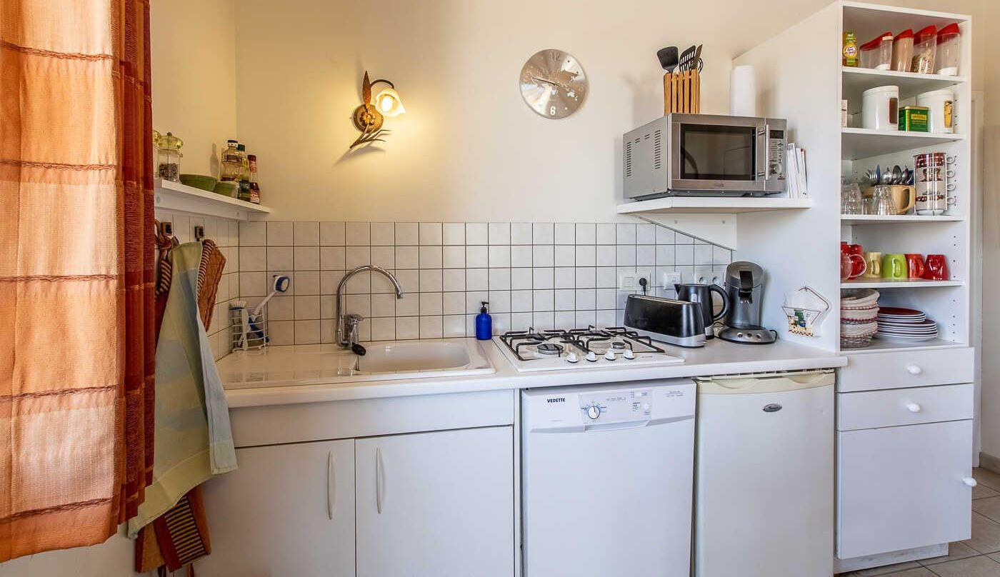
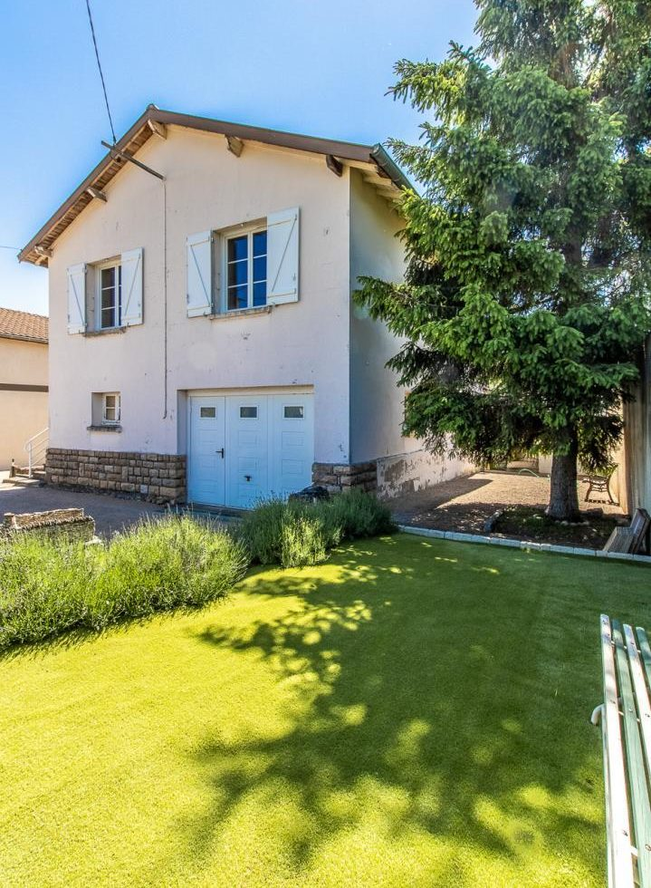

Issue d’une famille de vignerons depuis cinq générations, « de mère en fille ou presque », Sophie vous ouvre sa maison d’hôtes, sur le petit domaine de 4,5 ha qu’elle cultive en bio avec son mari.
Sophie est charmante et son vin délicieux ! Réservez les yeux fermés !Fred, sur Gîtes de France
01La chambre jaune
Les murs couleur soleil, un grand lit de 160 et sa salle d’eau privative, face aux vignes.
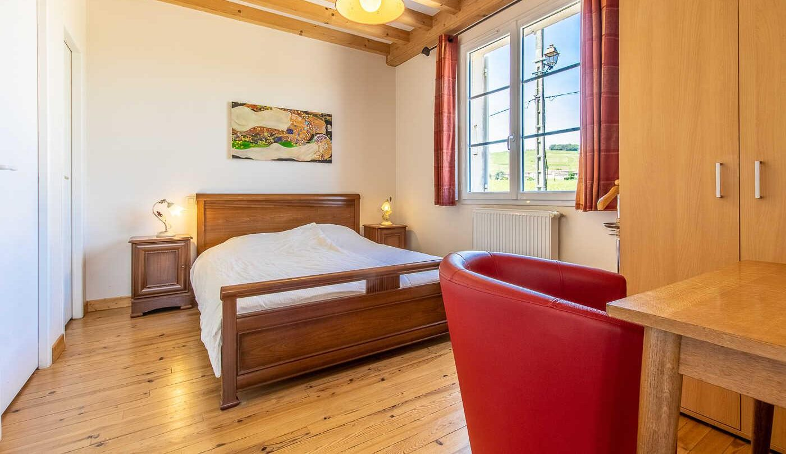
02La chambre blancheUne chambre claire aux paysages peints, sa salle d’eau et ses toilettes indépendantes.
Les deux chambres, la mezzanine pour les enfants et la pièce de vie, rien que pour vous.


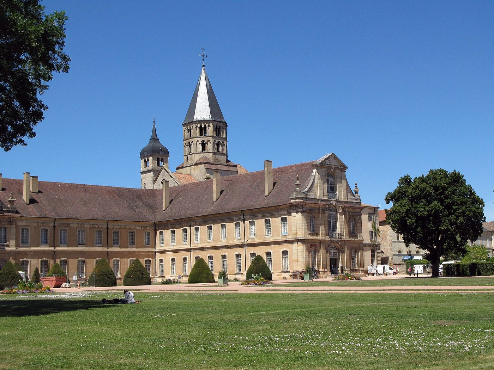


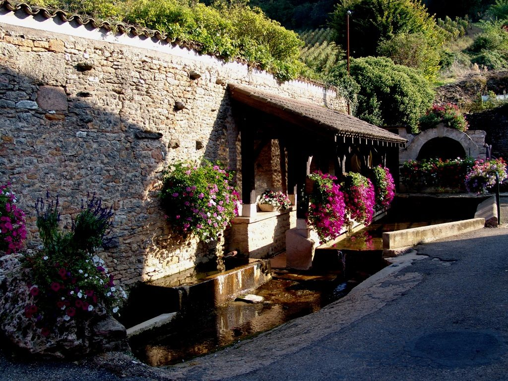
« Bel endroit beau village, Sophie est charmante et son vin délicieux ! Réservez les yeux fermés ! »
« Le gîte est au calme dans le village de Fuissé dans les vignes. Sophie notre hôte nous a bien accueilli et nous avons eu le droit à une dégustation de ses vins. »
« Gîte très bien situé et pratique. Flexibilité du propriétaire pour une arrivée tardive. Très bon petit déjeuner. Merci pour tout ça ! »
« Bel endroit beau village, Sophie est charmante et son vin délicieux ! Réservez les yeux fermés ! »
« Le gîte est au calme dans le village de Fuissé dans les vignes. Sophie notre hôte nous a bien accueilli et nous avons eu le droit à une dégustation de ses vins. »
« Gîte très bien situé et pratique. Flexibilité du propriétaire pour une arrivée tardive. Très bon petit déjeuner. Merci pour tout ça ! »

« Bel endroit beau village, Sophie est charmante et son vin délicieux ! Réservez les yeux fermés ! »
« Le gîte est au calme dans le village de Fuissé dans les vignes. Sophie notre hôte nous a bien accueilli et nous avons eu le droit à une dégustation de ses vins. »
« Gîte très bien situé et pratique. Flexibilité du propriétaire pour une arrivée tardive. Très bon petit déjeuner. Merci pour tout ça ! »
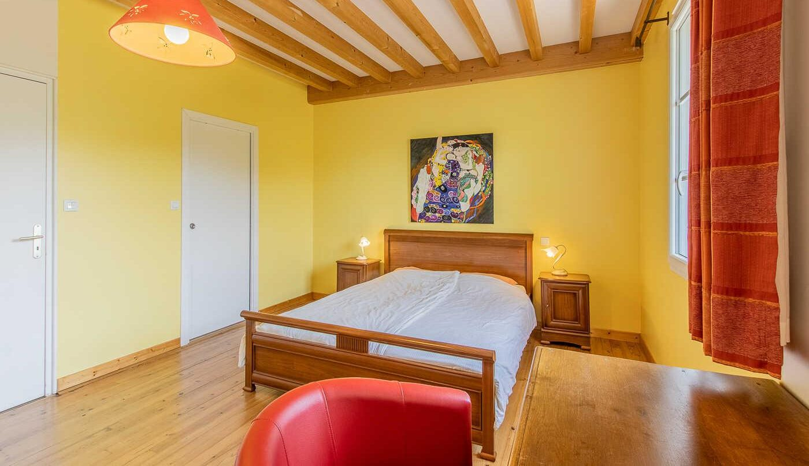
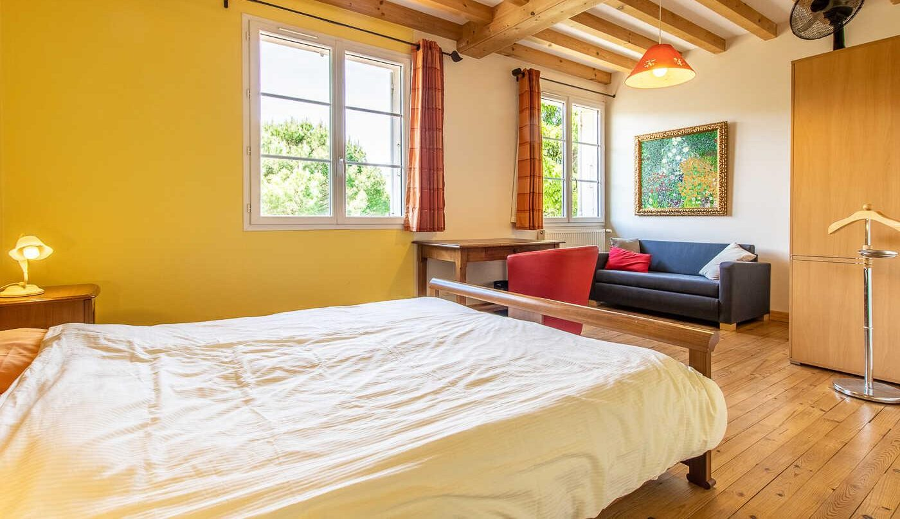
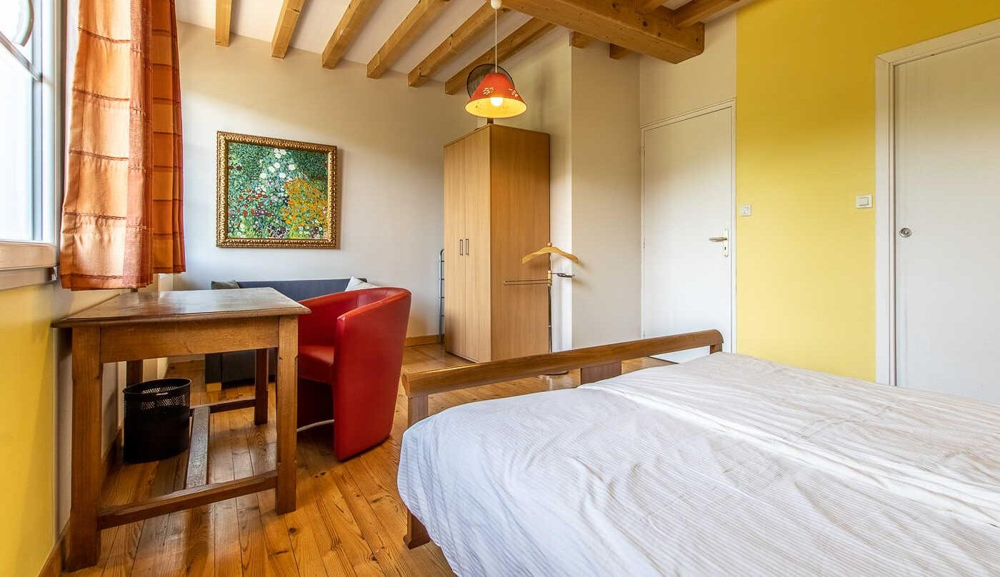
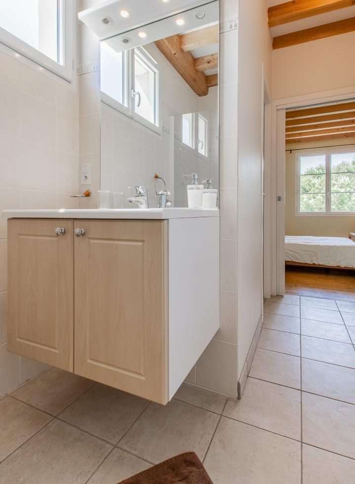
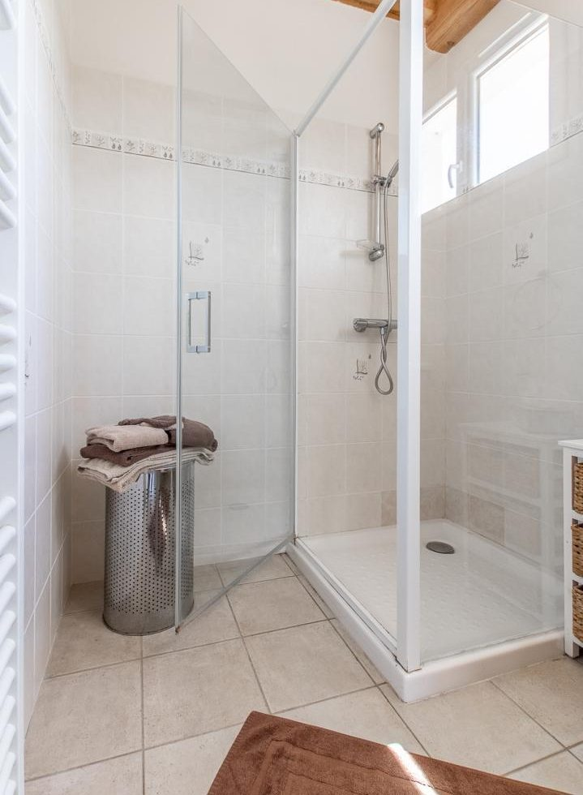
Au premier étage, la chambre Pouilly-Fuissé a son accès indépendant et sa salle d’eau privative. Le matin, on ouvre les volets sur les vignes du Mâconnais.
Murs jaunes, plancher en bois clair et poutres apparentes : la chambre est lumineuse toute la journée. Elle est soigneusement décorée, avec un grand lit, un bureau, une armoire et un porte-vêtements.
Le linge de maison, les draps, les couettes et les couvertures sont fournis. Le petit déjeuner, compris dans le prix, vous attend dans la pièce de vie, juste à côté.
« Bel endroit beau village, Sophie est charmante et son vin délicieux ! Réservez les yeux fermés ! »
« Gîte très bien situé et pratique. Flexibilité du propriétaire pour une arrivée tardive. Très bon petit déjeuner. Merci pour tout ça ! »
« Le gîte est au calme dans le village de Fuissé dans les vignes. Sophie notre hôte nous a bien accueilli et nous avons eu le droit à une dégustation de ses vins. »
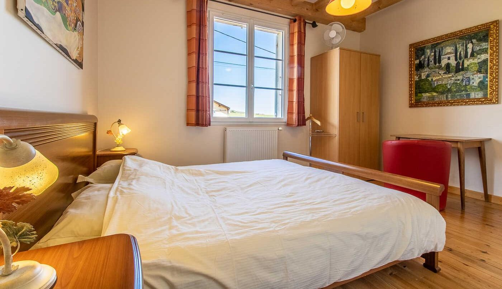
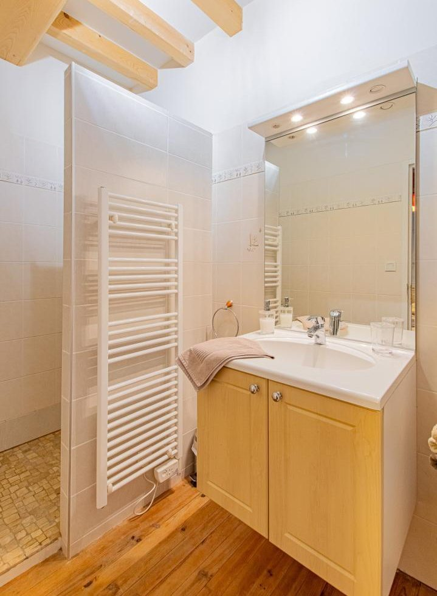
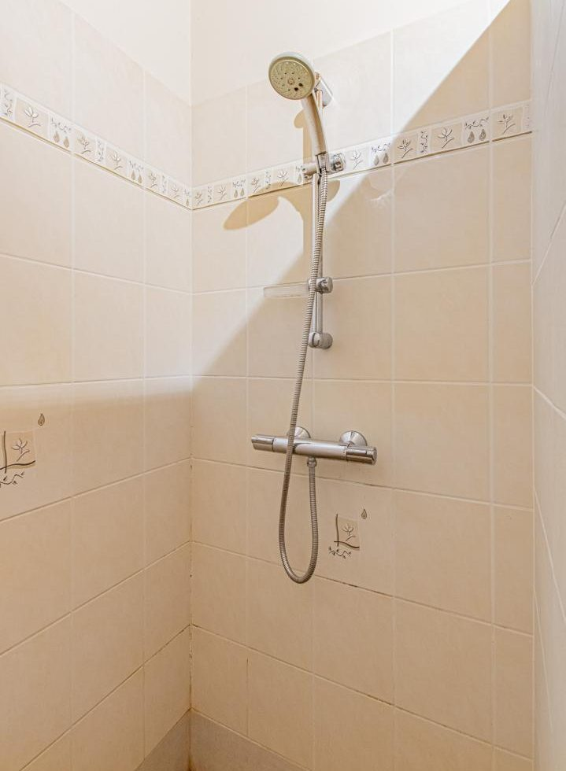
Au premier étage, la chambre Saint-Véran a son accès indépendant, sa salle d’eau privative et des toilettes séparées. Elle porte le nom de l’autre grand cru du domaine.
Murs blancs, poutres claires et rideaux aux tons chauds : la chambre Saint-Véran est simple et lumineuse. On y trouve un grand lit, un bureau, une armoire et un porte-vêtements.
Le linge de maison, les draps, les couettes et les couvertures sont fournis. Le petit déjeuner, compris dans le prix, se prend dans la pièce de vie réservée aux hôtes.
« Le gîte est au calme dans le village de Fuissé dans les vignes. Sophie notre hôte nous a bien accueilli et nous avons eu le droit à une dégustation de ses vins. »
« Bel endroit beau village, Sophie est charmante et son vin délicieux ! Réservez les yeux fermés ! »
« Gîte très bien situé et pratique. Flexibilité du propriétaire pour une arrivée tardive. Très bon petit déjeuner. Merci pour tout ça ! »
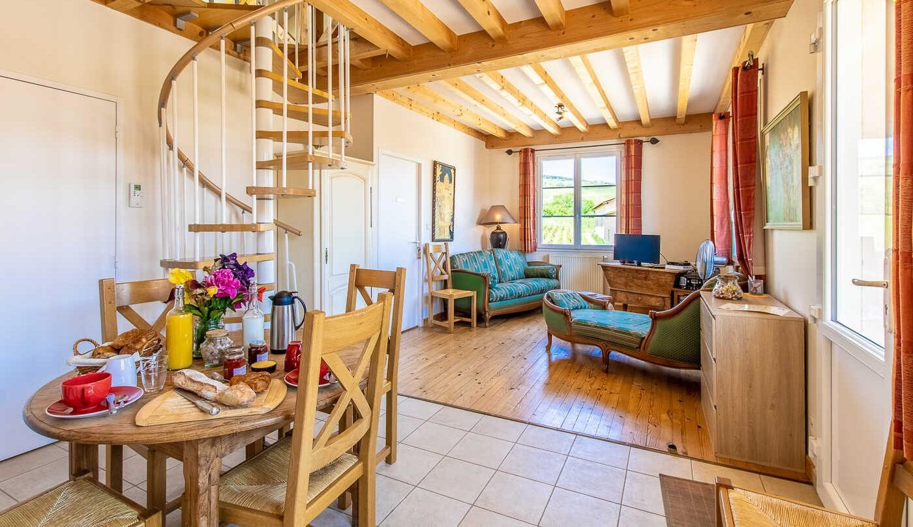
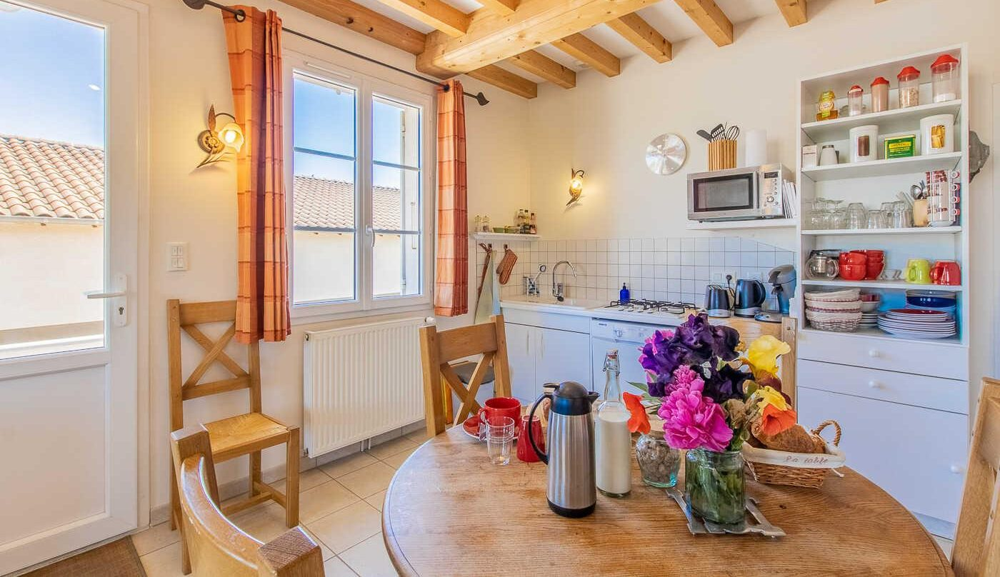
Louez toute la maison d’hôtes : 100 m² au premier étage avec les deux chambres, la pièce de vie et sa cuisine, plus la mezzanine de 35 m² sous le toit pour les enfants.
La pièce de vie est réservée aux hôtes : un grand salon avec une chaise longue et un canapé, la télévision et le wifi, puis un coin cuisine tout équipé (lave-vaisselle, réfrigérateur, micro-ondes, quatre feux, cafetière, bouilloire, grille-pain).
Par l’escalier en colimaçon, on monte à la mezzanine de 35 m², idéale pour deux enfants. Dehors, la grande cour, le jardinet et la terrasse abritée avec sa cuisine d’été sont à vous.
« Gîte très bien situé et pratique. Flexibilité du propriétaire pour une arrivée tardive. Très bon petit déjeuner. Merci pour tout ça ! »
« Le gîte est au calme dans le village de Fuissé dans les vignes. Sophie notre hôte nous a bien accueilli et nous avons eu le droit à une dégustation de ses vins. »
« Bel endroit beau village, Sophie est charmante et son vin délicieux ! Réservez les yeux fermés ! »